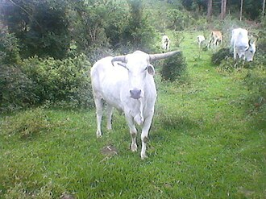

Associação Brasileira dos Criadores de Zebu
De TriânguloLeaks, a enciclopédia do Triângulo Mineiro
|
 CC BY-SA Foto de terceiros, via Wikimedia Commons — consulte a página do arquivo para o nome do autor e a versão exata da licença antes de reutilizar. Sobre o licenciamento. | |
| Resumo | |
|---|---|
| Entidade nacional de registro genealógico de bovinos zebuínos, sediada em Uberaba, Minas Gerais, desde sua fundação. | |
| Dados | |
| Tipo | Associação de criadores (entidade sem fins lucrativos) |
| Fundação | 1919, como "Herd Book da Raça Zebu" |
| Nome atual adotado em | 25 de março de 1967 |
| Sede | Parque Fernando Costa, Uberaba, Minas Gerais |
| Atividade principal | Registro genealógico de bovinos zebuínos; organização da ExpoZebu |
{kind=link}
A Associação Brasileira dos Criadores de Zebu (ABCZ) é a entidade responsável, no Brasil, pelo registro genealógico das raças bovinas zebuínas, sediada no Parque Fernando Costa, em Uberaba. Fundada em 1919 como "Herd Book da Raça Zebu", adotou o nome atual em 25 de março de 1967 e é também a entidade organizadora da ExpoZebu, a maior feira de zebuínos do mundo.[1]
Fundação e transformações institucionais [editar]
Fundação e transformações institucionais [editar]
A ABCZ nasceu em 1919, em Uberaba, sob o nome de "Herd Book da Raça Zebu", com o objetivo de garantir a origem genealógica dos animais zebuínos então importados da Índia. Em 1934, o Herd Book foi absorvido pela Sociedade Rural do Triângulo Mineiro (SRTM), que já em 1935 institucionalizou a Exposição Agropecuária do Triângulo Mineiro — embrião do que se tornaria a ExpoZebu. Em 1938, um convênio com o Ministério da Agricultura autorizou o registro genealógico, em nível nacional, de todas as raças bovinas de origem indiana.[1]
Em 1941, foi inaugurado o Parque Fernando Costa, sede permanente da entidade até hoje. Em 25 de março de 1967, a SRTM foi oficialmente transformada na Associação Brasileira dos Criadores de Zebu (ABCZ), nome que a entidade mantém.[1]
Atuação atual [editar]
Atuação atual [editar]
A ABCZ mantém hoje, segundo dados da própria entidade, mais de 25 mil associados e o que descreve como o maior banco de dados genealógico de zebuínos do mundo, com mais de 12 milhões de animais registrados e cerca de 600 mil novos registros por ano. A entidade também mantém o Museu do Zebu, em sua sede em Uberaba, e organiza anualmente a ExpoZebu, consolidando Uberaba como referência mundial na pecuária zebuína.[1][2]
Localização [editar]
Localização [editar]
Local principal ou mencionado neste artigo: Parque Fernando Costa, Uberaba, Minas Gerais.
Ver também
Referências
- ↑ ABCZ — Associação Brasileira dos Criadores de Zebu. "História" — usado para a fundação em 1919, as transformações institucionais (1934–1967) e os dados atuais de associados e registros. abcz.org.br/a-abcz/historia.
- ↑ ABCZ. "Museu do Zebu" — usado para a existência do Museu do Zebu na sede da entidade. abcz.org.br/a-abcz/museu-do-zebu.